This section presents the series-parallel layout style.
- About the Style: What it looks like, the main traits of this layout.
- SeriesParallelLayouter is the main class that provides series-parallel layout.
The series-parallel layout style specializes in the layout of series-parallel graphs, a special subset of so-called two-terminal graphs whose structure can be built recursively using two distinct composition operations as outlined in the section called “Terminology”.
General graphs are processed by temporarily transforming them into a series-parallel structure for the layout calculation.
Similar to the hierarchical layout style, this style can highlight the main direction or flow within a directed graph. The nodes of a graph are placed such that the (majority of) edges of the graph show the same overall orientation, for example, top-to-bottom.
The layout algorithm places series structures of the given graph below each other and parallel structures side by side.
Note that for true series-parallel graphs, it is always possible to place the nodes such that there are no edge crossings.
Figure 5.84, “Sample layout by class SeriesParallelLayouter” shows a series-parallel layout with top-to-bottom orientation of a series-parallel graph. Note that the series-parallel layout style can be combined with polyline, orthogonal, and octilinear edge routing. Also, layout of grouped graphs is supported by this layout style, too.
In a series-parallel graph there are two distinct terminal nodes: a source node with only outgoing edges and a sink node with only incoming edges. In between these terminal nodes, there can be any combination of series and parallel structures that are composed recursively using two distinct composition operations.
The composition operations are:
- series composition operation: two series-parallel graphs are joined by merging the source node of one with the sink node of the other; the resulting graph is a series of the two previous graphs; see the two left figures for the before and after of this composition operation
- parallel composition operation: two series-parallel graphs are joined by merging their source nodes and merging their sink nodes; in the resulting graph the non-terminal nodes of the two previous graphs are in parallel; see the two right figures for the before and after of this composition operation
Figure 5.85. Series-parallel composition operations
|
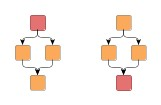
|
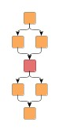
|
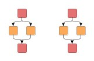
|
 |
| Series-parallel graphs before... | ... and after being joined by a series composition operation. | Series-parallel graphs before... | ... and after being joined by a parallel composition operation. |
Note that terminal nodes can also be identified in each parallel (sub)structure of a series-parallel graph. The beginning of the parallel (sub)structure is defined by a source node from which multiple edges leave, and the end is defined by a sink node into which multiple edges enter.
Table 5.64, “Relevant classes for this style” lists the relevant classes for the series-parallel layout style.
Table 5.64. Relevant classes for this style
| Classname | Description |
|---|---|
| SeriesParallelLayouter | Main algorithm. See the description below. |
| EdgeLayoutDescriptor | Provides edge-related layout options. |
| DefaultPortAssignment | Configures port distribution options at terminal nodes before and after parallel subgraphs. |
Class SeriesParallelLayouter is a layout provider for series-parallel graphs.
It provides a set of options that affect its layout behavior. These options can be set using the setter methods of class SeriesParallelLayouter. The options are documented within the API documentation of class SeriesParallelLayouter.
These options configure class SeriesParallelLayouter in detail.
| Layout Orientation | |
| API | void setLayoutOrientation(byte orientation) |
| Description |
Determines the main layout orientation, i.e., the overall orientation for the edges in a layout. This method is inherited from CanonicMultiStageLayouter, the direct superclass of SeriesParallelLayouter. The layout algorithm tries to arrange nodes in such a way that all edges point in the main layout direction. By default, the overall orientation for the edges will be from top to bottom. The other three layout directions can be set using the constants defined in interface LayoutOrientation. Example 5.39, “Setting the layout orientation” shows how to set the layout direction. |
Note
The documentation for the other layout options assumes that this default orientation is being used.
Example 5.39. Setting the layout orientation
SeriesParallelLayouter spl = new SeriesParallelLayouter(); // Use left-to-right main layout direction. spl.setLayoutOrientation(LayoutOrientation.LEFT_TO_RIGHT);
The order of parallel subgraphs can be controlled by a custom java.util.Comparator implementation.
| Out Edge Comparator | |
| API | void setDefaultOutEdgeComparator(Comparator comparator) |
| Description | Sets the default Comparator implementation for outgoing edges. |
If a terminal node has several outgoing edges, the out edge comparator is used to sort them by a certain criterion. The following left figure shows a graph where edges are sorted from left to right by the height of their target node.
It is important to understand that outgoing edges may not be completely independent, and in order to avoid edge crossings, only edges that connect into the same parallel subgraph are compared. The right figure shows an example of this when the outgoing edges are sorted using the same criterion. Although the middle edge has a smaller target node than the right edge, it is not sorted to the left because it connects to the same subgraph as the left edge.
SeriesParallelLayouter provides configuration for general drawing options like, e.g., edge routing styles, edge segment lengths, or minimum distances between graph elements.
Options which affect edge routing:
void setRoutingStyle(byte routingStyle) |
|
| Description | Configures the routing style for the edges in the graph. |
Figure 5.87. Routing style
|
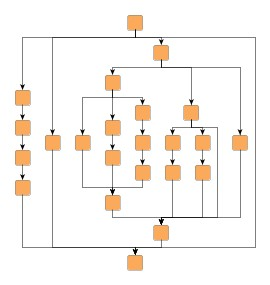
|
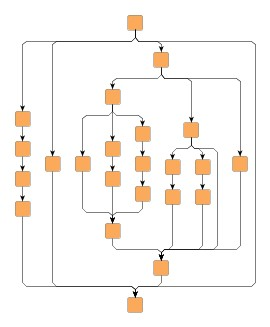
|
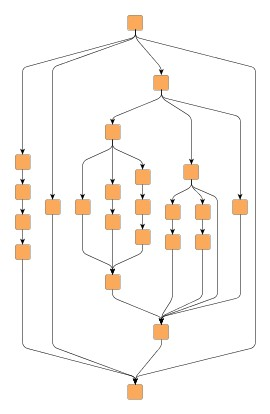
|
| Orthogonal edge routing. | Octilinear edge routing. | Polyline edge routing. |
Options that can be used to refine the edge routing:
| Preferred Octilinear Segment Length | |
| API | void setPreferredOctilinearSegmentLength(double length) |
| Description | Specifies the preferred length of the octilinear edge segment (the one with 45 degree slope). |
| Minimum Polyline Segment Length | |
| API | void setMinimumPolylineSegmentLength(double length) |
| Description | Determines the minimum length of the sloped edge segment of polyline edges. |
| Minimum Slope | |
| API | void setMinimumSlope(double slope) |
| Description | Determines the minimum slope of the sloped edge segment of polyline edges. |
Further drawing style options for edges can be specified by means of the EdgeLayoutDescriptor class. An instance of this class is held by SeriesParallelLayouter to store and retrieve default values for drawing style options, like, e.g., minimum lengths.
SeriesParallelLayouter provides access to the default EdgeLayoutDescriptor instance through:
void setDefaultEdgeLayoutDescriptor(EdgeLayoutDescriptor eld) |
|
| Description | Edge-related layout options. |
An EdgeLayoutDescriptor instance can be specified individually for single edges by means of a data provider that is bound to the graph. The data provider is expected to be registered with the graph using key EDGE_LAYOUT_DESCRIPTOR_DP_KEY. In the absence of an individual descriptor for an edge, the default EdgeLayoutDescriptor instance that is registered with SeriesParallelLayouter will be used.
Options which affect node placement:
| Minimum Node to Node Distance | |
| API | void setMinimumNodeToNodeDistance(double distance) |
| Description | Specifies the minimum distance between two nodes. |
| Minimum Node to Edge Distance | |
| API | void setMinimumNodeToEdgeDistance(double distance) |
| Description | Specifies the minimum distance between a node and a segment of an edge. If the facing sides of two parallel subgraphs both show nodes and edges, the maximum of this value and the Minimum Node to Node Distance is used. |
| Minimum Edge to Edge Distance | |
| API | void setMinimumEdgeToEdgeDistance(double distance) |
| Description | Specifies the minimum distance between the segments of two edges. This only applies to edge segments that are not bundled in a bus or restricted through a common port. |
| Vertical Alignment of Parallel Subgraphs | |
| API | void setVerticalAlignment(double alignment) |
| Description | Determines the vertical alignment of parallel subgraphs. Values can be set from 0.0 (top) to 1.0 (bottom). See also Figure 5.88, “Vertical alignment of parallel subgraphs”. |
Figure 5.88. Vertical alignment of parallel subgraphs
|
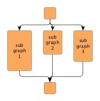
|
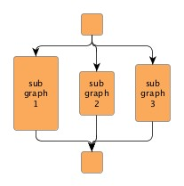
|
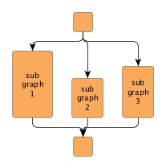
|
| Vertical alignment = 0.0 | Vertical alignment = 0.5 | Vertical alignment = 1.0 |
To distribute the outgoing, respectively incoming edges at the terminal nodes before and after parallel subgraphs, SeriesParallelLayouter by default uses an instance of class DefaultPortAssignment, which provides two port assignment modes as depicted in the following figure:
Figure 5.89. Port assignment modes
|
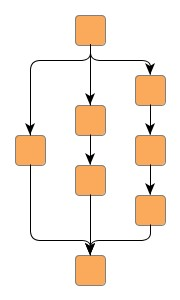
|
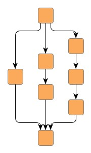
|
| PORT_ASSIGNMENT_MODE_CENTER: the ports of outgoing, resp. incoming edges are all placed in the center of the terminal node. | PORT_ASSIGNMENT_MODE_DISTRIBUTED: the ports of outgoing, resp. incoming edges are evenly distributed at the lower, resp. upper side of the terminal node. |
Note that in both modes certain aspects of port constraint configuration of the outgoing or incoming edges will be ignored in order to prevent situations where this would lead to confusing (or even conflicting) edge routes in the resulting layout. In particular, this applies to the direction specified by a port constraint of an outgoing or incoming edge. However, the ports of edges with a strong port constraint will get
- the original location relative to the terminal node's center as specified by their strong port constraint.
- the original location relative to the terminal node's center as specified by the first strong port constraint encountered among all edges that belong to the same edge group (as specified by SOURCE_GROUPID_KEY or TARGET_GROUPID_KEY). Note that all edges that belong to the same edge group should yield the same strong port constraint.
Additionally, class DefaultPortAssignment also makes available two so-called fork modes that also affect the distribution of ports of outgoing, respectively incoming edges, as well as the routing of the edges:
Figure 5.90. Port assignment fork modes
|
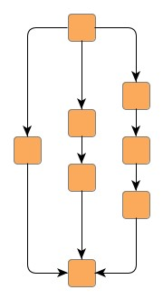
|
|
| FORK_STYLE_OUTSIDE_NODE: all ports are interpreted in flow direction of the graph. If the layout orientation is TOP_TO_BOTTOM, all incoming edges enter the terminal node on the north side and all outgoing edges leave the terminal node on the south side. | FORK_STYLE_AT_NODE: edges may connect to the terminal nodes at the left/right side which reduces the number of bends most of the time. |
SeriesParallelLayouter provides access to the default PortAssignment implementation through:
void setDefaultPortAssignment(PortAssignment defaultPortAssignment) |
|
| Description | Configures the default PortAssignment implementation that is used by SeriesParallelLayouter. The factory default for this is an instance of class DefaultPortAssignment. |
A PortAssignment implementation can be specified individually for single nodes by means of a data provider that is bound to the graph. The data provider is expected to be registered with the graph using key PORT_ASSIGNMENT_DP_KEY. In the absence of an individual implementation for a node, the default PortAssignment implementation that is registered with SeriesParallelLayouter will be used.
Upon creation, SeriesParallelLayouter is in non-incremental layout mode by default, i.e., it recomputes the entire layout of a given graph. The other layout mode, namely "From Sketch" mode, needs to be turned on explicitly using the following setter method.
If "From Sketch" mode is enabled, the original locations of the nodes are taken into account when arranging the subgraphs. The graph stays planar, because the original node locations are only considered for the subgraphs (see property Out Edge Comparator in the section called “Layout Options”).
void setFromSketchModeEnabled(boolean enabled) |
|
| Description | Enables "From Sketch" mode. |
To determine whether or not a graph is series-parallel, SeriesParallelLayouter offers the following static method:
static boolean isSeriesParallelGraph(Graph graph) |
|
| Description | Whether the given graph is series-parallel. |
It is possible to use SeriesParallelLayouter on general graphs by activating the following setter method.
On a given general graph, the layout algorithm tries to find series-parallel structure by temporarily adding and/or removing edges to/from the graph structure. After a layout for the modified graph has been calculated, all modifications to the graph structure are then reverted.
| Handling General Graphs | |
| API | void setGeneralGraphHandlingEnabled(boolean enabled) |
| Description | Enables support for series-parallel layout calculation of general graphs. |
Any previously removed edges are reinserted and routed using the edge routing algorithm that is returned by the following getter method. By default, class EdgeRouter is used.
Layouter getNonSeriesParallelEdgeRouter() void setNonSeriesParallelEdgeRouter(Layouter edgeRouter) |
|
| Description | Configures the edge routing algorithm that is used to route edges of a general graph that do not conform to the series-parallel structure. |
Note that if another edge routing algorithm is set, a data provider look-up key needs to be specified in addition. When invoking this edge routing algorithm, the look-up key is used by the series-parallel layout algorithm to communicate the set of non-conforming (i.e., non-series-parallel) edges that it should process.
void setNonSeriesParallelSelectionKey(Object key) |
|
| Description | Specifies the data provider look-up key used to communicate the set of non-conforming (i.e., non-series-parallel) edges that a custom edge routing algorithm should process. |
Besides the generic labeling support as described in the section called “Generic Labeling”, which is available with all yFiles layout algorithms, the series-parallel layout algorithm additionally supports integrated labeling. Additionally, SeriesParallelLayouter can be set up to take node labels into account during layout.
Integrated labeling is available for edge labels. They are taken into consideration when determining both node placement and edge path generation and are placed according to their PreferredPlacementDescriptor. With this strategy it is guaranteed that no edge label will overlap other objects in the diagram.
Integrated labeling can be enabled or disabled using the following setter method:
void setIntegratedEdgeLabelingEnabled(boolean enabled) |
|
| Description | Determines whether integrated labeling is enabled. |
See also the section called “Integrated Labeling”.
Tip
Optimal label placement with integrated labeling can be achieved using FreeEdgeLabelModel as the label model for the edges. As explained in the section called “Label Models”, this edge label model is ideally suited in combination with integrated labeling and yields the best match for a label location that is computed by SeriesParallelLayouter.
SeriesParallelLayouter provides support for node label-aware layout. Node labels do not need to be placed, but instead their size needs to be considered for the placement of adjacent graph elements. Taking node labels into consideration during layout calculation guarantees that they will not overlap nodes in the diagram.
Node label awareness is enabled using:
void setConsiderNodeLabelsEnabled(boolean enabled) |
|
| Description | Takes into account the size of node labels. |
SeriesParallelLayouter supports grouped graphs. However, there are some restrictions with respect to the actual grouping structure of a grouped graph both inside and outside of groups:
- the inner graph of a group needs to be series-parallel
- the part of the graph outside of a group needs to stay series-parallel when the group is closed
In the special case that the inner graph of a group would be series-parallel when adding a source node and/or a sink node to it, then the inner graph is also considered series-parallel.
Class SeriesParallelLayouter knows a number of data provider keys which are used to retrieve supplemental layout data for a graph's elements. The data is bound to the graph by means of a data provider, which is registered using a given look-up key. Table 5.65, “Data provider look-up keys” lists all look-up keys for SeriesParallelLayouter.
Binding supplemental layout data to a graph is described in the section called “Providing Supplemental Layout Data”.
Table 5.65. Data provider look-up keys
| Key | Element Type | Value Type | Description |
|---|---|---|---|
| EDGE_LAYOUT_DESCRIPTOR_DP_KEY | Edge | EdgeLayoutDescriptor | For each edge an EdgeLayoutDescriptor object that configures a number of edge-related options. |
| OUT_EDGE_COMPARATOR_DP_KEY | Node | Comparator | For each (terminal) node a Comparator object that is used to sort the outgoing edges. |
| PORT_ASSIGNMENT_DP_KEY | Node | PortAssignment | For each (terminal) node a PortAssignment implementation that assigns ports to the edges. |
| EDGE_LABEL_LAYOUT_KEY | Edge | LabelLayoutData[] | For each edge an array of LabelLayoutData objects that encode size and preferred placement for all labels of the edge. |
| NODE_LABEL_LAYOUT_KEY | Node | LabelLayoutData[] | For each node an array of LabelLayoutData objects that encode size and preferred placement for all labels of the node. |
| SOURCE_GROUPID_KEY | Edge | Object | For each edge an arbitrary Object indicating the group its source end is affiliated with. |
| TARGET_GROUPID_KEY | Edge | Object | For each edge an arbitrary Object indicating the group its target end is affiliated with. |